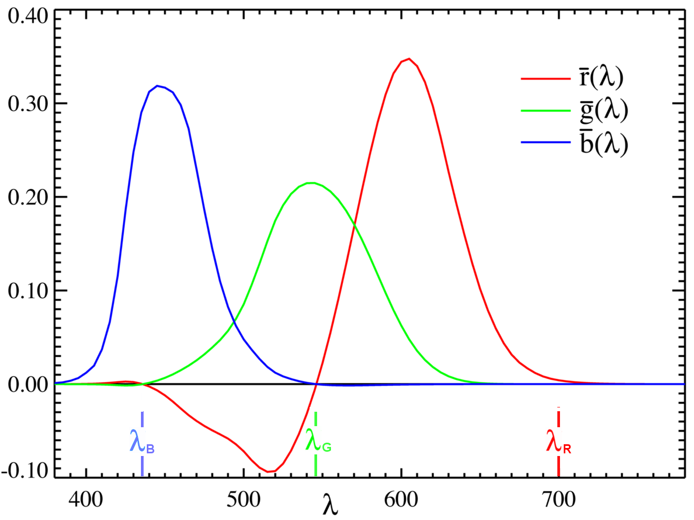

人类对颜色的感知
人为什么会感觉到不同的颜色？颜色为什么可以用三基色混合而成？让我们从光的质出发来理解这些问题。
人眼对光的感知
人眼中有视锥细胞（cone cell）和视杆细胞（rod cell）两种感光细胞（photoreceptor cell）。不同的感光细胞含有不同的视蛋白（opsins），因此不同的感光细胞对不同波长的光敏感程度不同。
视杆细胞只对光比较敏感，但只有一种光敏色素。相比于视杆细胞对光，视锥细胞对光的敏感度比较低，但有三种类型，分别可以感受长波长（Long, L），中波长（Medium, M）和短波长（Short, S）的光（trichromacy）。[1]
| 四种感光细胞对不同波长的光的敏感程度 | |||
|---|---|---|---|
| Blue cones | Rods | Green cones | Red cones |
| 420 nm #6a00ff | 498 nm #00ffa9 | 534 nm #6cff00 | 564 nm #cfff00 |
| 波长到RGB在线转换：https://www.johndcook.com/wavelength_to_RGB.html | |||

|
|||

|
|||
{kind=link}
{kind=link}
色彩空间
如何对不同的颜色定量地描述呢？最直接的描述就是人眼接收到光的光谱 $S(\lambda)$，其中 $\lambda$ 是光的波长。给定光谱 $S(\lambda)$，颜色也就确定了。本节提到的数学概念仅用于理解，不做严格定义。
但人眼感受到的同一种的颜色的光，光谱也可能不完全一样（条件等色， Metamerism）。比如太阳光的光谱非常丰富，人眼感受到的颜色是白色。但电子显示器上白色，却只有红绿蓝三种光。原因很简单，光谱 $S(\lambda)$ 的变量是连续变化的波长 $\lambda$ 是一个无穷维的空间，但是人眼只有三种对波长敏感的细胞，把光谱 $S(\lambda)$ 投影到了三维空间上。所有具有相同颜色的光谱 $S(\lambda)$ 可以理解成一个等价类，人眼就只有分辨不同的等价类，不能分辨不同的光谱 $S(\lambda)$ 。简而言之，$S(\lambda)\mapsto \mathrm{Color}$ 不是单射。
直接用光的波长描述颜色也不好，因为有些颜色没有单一波长的光的对应。比如品红（#FF00FF，magenta），就没有单一波长的可见光与之对应。原因是，波长 $\lambda$ 是单一变量，一维空间，但人眼能感受的颜色是三种视锥细胞的响应，是一个三维空间。简而言之，$\lambda\mapsto \mathrm{Color}$ 是单射，但不是满射。
我们想要一个好的描述，它应该是把无穷维的光谱，映射到一个三维的空间（因为有三种视锥细胞）。这个三维空间到所有的颜色的映射，即是单射，又是满射，即双射。或者近似是单射也行。这个有限维的空间，就是色彩空间（color space）。Grassmann 定律[2]给出了一些色彩空间的性质，大致是说，色彩空间应该是一个“三维”，且“线性”的空间。
在 1931 年，国际照明委员会（International Commission on Illumination, CIE)）定义了人眼看到的一束光（光谱 $S(\lambda)$）的颜色，即，与色彩空间中的一个点的映射关系（CIE 1931 color space）。
色彩空间有好多种。下面简要介绍。
LMS 色彩空间
LMS 色彩空间就是直接根据人眼的三种视锥细胞的响应函数定义的。它是一个三维的线性空间，有三个坐标 $L, M$ ，和
其中响应函数 $l(\lambda), m(\lambda)$ 和 $ s(\lambda)$ 由实验测定。即使是不同的光谱 $S(\lambda)$ ，只要坐标 $L, M, S$ 相同，人眼感受的颜色就是相同的。响应函数 $l(\lambda), m(\lambda)$ 和 $ s(\lambda)$ 也已经把人眼看不见的颜色做了截断。所以，从 LMS 色彩空间到所有人眼能感觉到的颜色的映射 $\mathcal{C}_{LMS}\mapsto \{\mathrm{Colors}\}$ 这是一个双射。
CIE RGB 色彩空间
在 1931 年，国际照明委员会（International Commission on Illumination, CIE)）实验测定的色彩空间。
实验用波长为 435.8nm（蓝）， 546.1nm（绿）， 700nm（红） 三种光混合，调节比例，使被试者认为混合之后的颜色，与某个波长的单色光（从连续光谱的光源通过分光获得）颜色相同，记下比例。由此可以测出响应函数 $\bar{r}(\lambda), \bar{g}(\lambda)$ ，和 $\bar{b}(\lambda)$ ,
$$ \begin{align*} R =& \int_{0}^{\infty} S(\lambda) \bar{r}(\lambda) \,\mathrm{d}\lambda, \\ G =& \int_{0}^{\infty} S(\lambda) \bar{g}(\lambda) \,\mathrm{d}\lambda, \\ B =& \int_{0}^{\infty} S(\lambda) \bar{b}(\lambda) \,\mathrm{d}\lambda. \end{align*} $$|  |
|---|
| 实验测得的 Color Matching Function。纵轴是归一化过的。给定一个横轴的值，三条曲线在此处的值，对应的就是合成此波长的单色光所需的三种颜色的光的比例。图片来自 Wikipedia。 |
{kind=link}
仔细观察可以发现，在 435.8nm（蓝）， 546.1nm（绿）， 700nm（红）三处，只有一种光有值，其它光为零就可以合成。比如 700nm（红）的单色光的颜色的坐标为，
$$ \begin{align*} R_{\mathrm{R}} = & \int_{0}^{\infty} \delta(\lambda - \lambda_{\mathrm{R}}) \bar{r}(\lambda) \,\mathrm{d}\lambda, \\ G_{\mathrm{R}} = & \int_{0}^{\infty} \delta(\lambda - \lambda_{\mathrm{R}}) \bar{g}(\lambda) \,\mathrm{d}\lambda = 0, \\ B_{\mathrm{R}} = & \int_{0}^{\infty} \delta(\lambda - \lambda_{\mathrm{R}}) \bar{b}(\lambda) \,\mathrm{d}\lambda = 0. \end{align*} $$除了这三个点外，都由两个正值，一个负值合成。负值代表的意义是减去该颜色的光，实验上是用该颜色的光照到单色光源上，以此来等效实现。
CIE XYZ 色彩空间
CIE RGB 色彩空间会出现负值，这会很不方便。由此就从 CIE RGB 定义了一个新的色彩空间。三个坐标为 $X, Y$ ， 和
 |
|---|
| CIE XYZ 色彩空间的 Color Matching Function。图片来自 Wikipedia。 |
{kind=link}
CIE XYZ 色彩空间和 LMS 色彩空间之间的线性变换为，
$$ \begin{align*} \begin{pmatrix} X\\ Y\\ Z \end{pmatrix} = \begin{pmatrix} 1.91020 & -1.11212 & 0.20191\\ 0.37095 & 0.62905 & 0\\ 0 & 0 & 1 \end{pmatrix} \begin{pmatrix} L\\ M\\ S \end{pmatrix}_{\mathrm{HPE}} \end{align*} $$CIE xyY 色彩空间
由于 CIE XYZ 的 Y 选做亮度，所以定义
$$ \begin{align*} x =& \frac{X}{X + Y + Z}\\ y =& \frac{Y}{X + Y + Z} \end{align*} $$这样 $x, y$ 取值在
 |
|---|
| CIE xyY 色彩空间。图片来自 Wikipedia。图中的光滑边缘是单色可见光谱。三角形由 CIE RGB 的三个从单色可见光谱中选取的围成。在三角形内, CIE RGB 坐标是非负的，而在外面，至少有一个值为负。同时也可以看出，在左上部分有较大部分在三角形外，对应的是 |
{kind=link}
其它 RGB 色彩空间
除了 CIE RGB 色彩空间，还有许多其它的 RGB 色彩空间。比如，我们常用的用十六进制表示的 RGB 颜色（#RRGGBB）就是 sRGB 色彩空间中的坐示。
 |
|---|
| 其它 RGB 色彩空间在 CIE xy 坐标中的色域（gamut）。图片来自 Wikipedia。 |
{kind=link}
其它色彩空间
HSL 和 HSV 色彩空间
设计和画画的时候，还经常用到 HSL 和 HSV 色彩空间。他们是把 RGB 色彩空间做了简单的变换，使得人们可以更容易地调出想要的颜色。
色彩搭配网站
- Material design tools for picking colors：谷歌为 Material Design 提供的色彩搭配工具，选一个主题色，会自动给出相应的搭配色彩。同时也介绍了一些色彩搭配的基本概念。
- happyhues：提供了一些色彩搭配方案。作者 Mackenzie 是一名前端工程师。
- coolors.co：一个调色盘网站。
- colorhunt.co：提供了很多配色，每一套四种颜色。可以根据标签查找。
- 中国传统色、日本传统色。
没错，就是Grassmann 数的那个 Hermann Grassmann（1809-1877）。 ↩︎